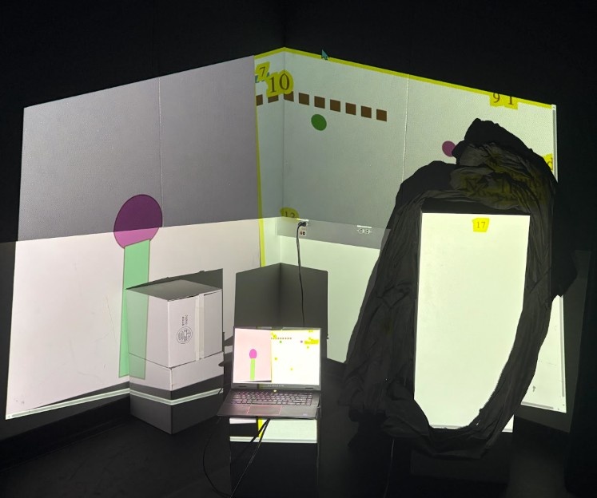
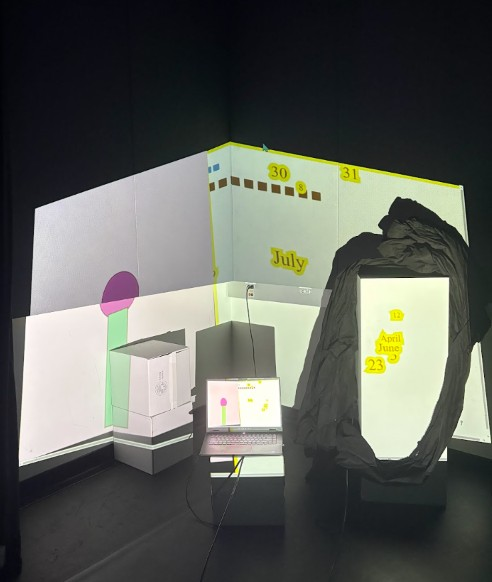
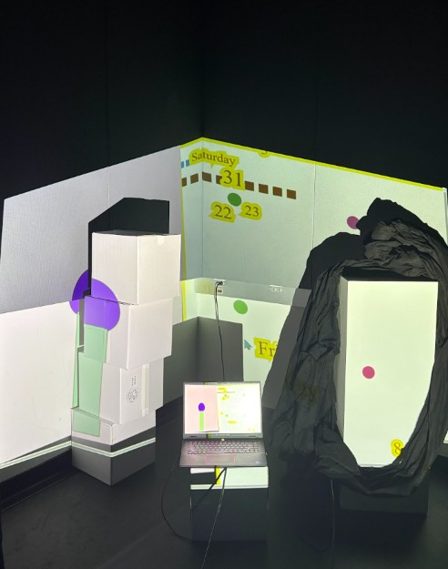
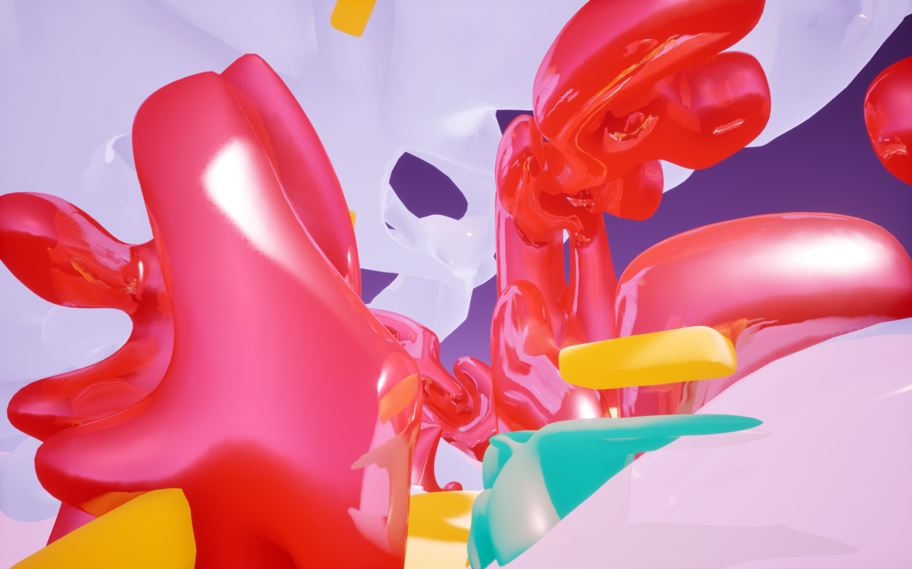
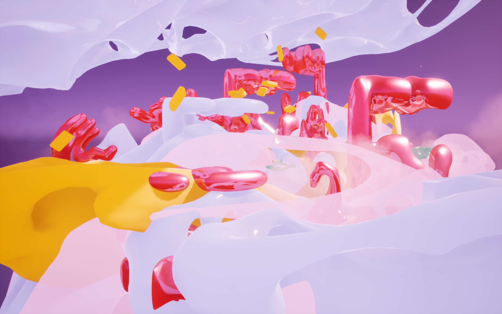
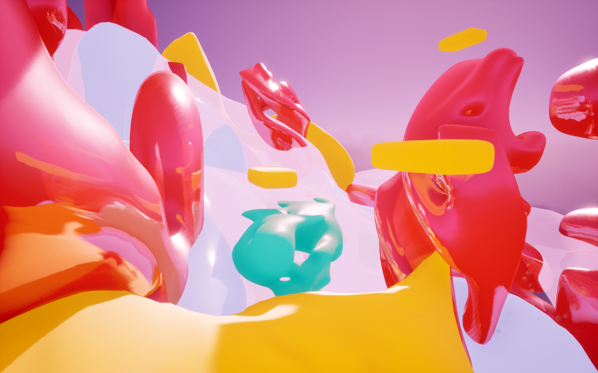
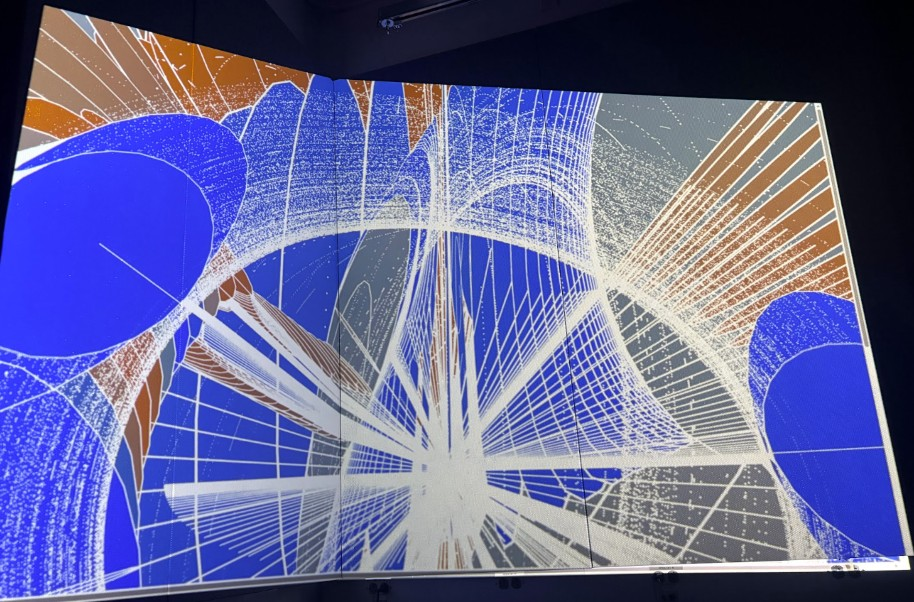
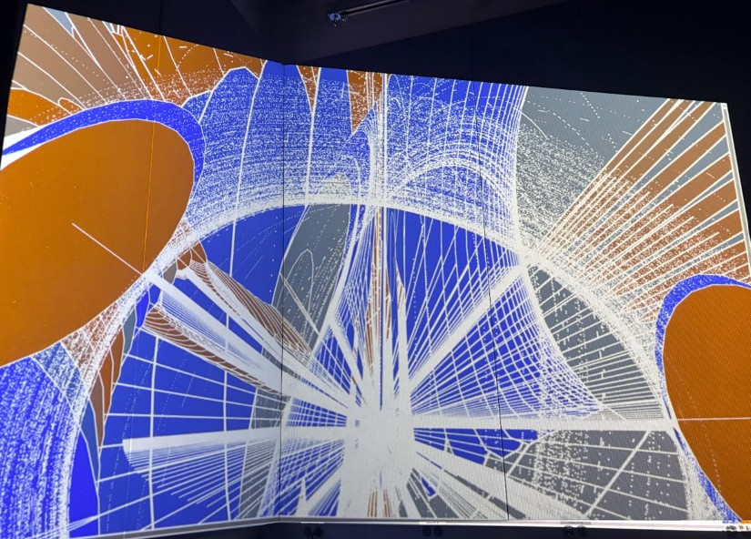

A clock: An argument can be made about how we read, view time. The merging of time and space created a new sphere of how I can create objects with code, beyond what we have seen in class. Creating an experience of hours encompassing the space surrounding it.
Togetherness as a team brought us closer to achieving a symphony of interactive code, but we were not able to all play in the same sand box. The code failed to correspond with one another, but Journey and I were functioning on the same scope, on the same corner, on a file I still have saved for the both of us. We both chose to sacrifice our artistic vision for the sake of collaboration with one another. We wanted to project it on the wall and I wanted to play around with the possibilities of projection mapping as it pertains to creating a three-dimensional lighting scope, where it can shine through on boxes and fabrics to further highlight the texture a code can bring with a bit of light and movement. Another thought I wish I had was to further explore how to showcase a video of the code next to the actual visuals and how beautiful it would have been to see the text projected. We styled our corner to present a room, colorful, playful, with a laptop work station sitting close to the ground to establish an interment setting. The vision came through when I started seeing how comfortable everyone got as we were establishing our own boundaries with light, shadow and code. The team flew, easy transitions and I would gladly work with them further. On the 4th we shared, the house and the senate flipped blue and we were able to project on objects, boxes and collaborate again. There were a few sacrifices I had to give up, I wanted to stretch out one of my clocks and have fabric hanging through them. I wanted to create a separate interactive version of my clock, because I had the code for it as well as add my arrays to have them floating in space. Create an environment of 3D models roaming through space. I will do it in the next couple of weeks for documentation purposes, and to have a going installation. I enjoyed collaborating with my team mates, I did have to sacrifice interactivity within my code, but I am glad I created three different versions of the clock and explored how vast I create create with code, I for the first time asked the LLM for help, because I kept getting glitches along the way, I apparently just needed a fresh set of eyes and a new function that I did not know I had to use after the last Visual Studio update. I also did not realize how many tiny spaces or “gaps” I had, because I pressed enter twice. Overall, I needed to clean up my code and figure out how to work with Visual Studio every time it decides to have a fit. I appreciate working together, I understand having to give up some creative extremities when jumping to the avant garde of what a clock is to create an image. Maybe the simple image with a complicated set of codes could bounce off the wall in a beautiful sequence without having to complicate what it's presenting; how mechanics of language and software created a clock, without lifting a finger, but writing it down and installing software. The LLM: this technology and I had to take some time to understand each other to relate to each other and see what it can do, it kept completely changing my code, which I was confused about, but the references provided were great and at least as I understood from it so far, is there having an orbit inside the borders would not have worked, because elements would've started crashing with one another. It showed me that for a collaboration session I am better off having a 2D version just in case something goes wrong. I appreciated the support through troubleshooting my code; but will I ever be dependent on it! I would like not to, no matter how much my brain is itching to not work anymore and have machine learning solve these ongoing issues. .







